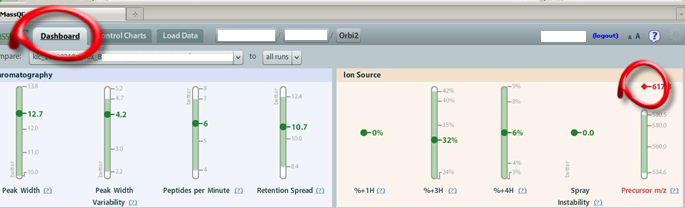
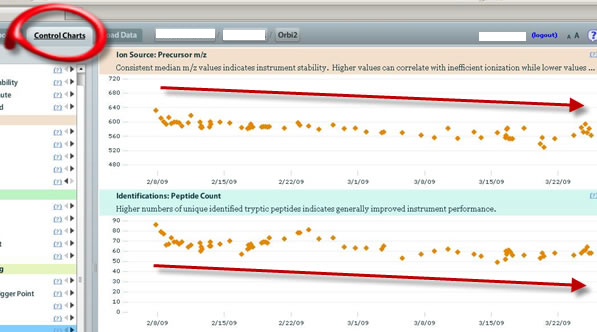

When the ion source begins to ionize less efficiently, a noticeable change in signal can be present. Although in the Dashboard we see an increased Precursor m/z , this alerts us to a bigger picture trend. The picture below shows an increase in Precursor m/z , but if you click the Control Charts tab and dig deeper, you see the trend.

In this case, we see long term signal degradation , correlating with decreasing Precursor m/z and an overall decrease in the number of Peptide Counts :

Often, MassQC will lead you to sift through the historical data in a way you may not otherwise expect. This can be a great deal of help when you notice problems that are of a more subtle nature.